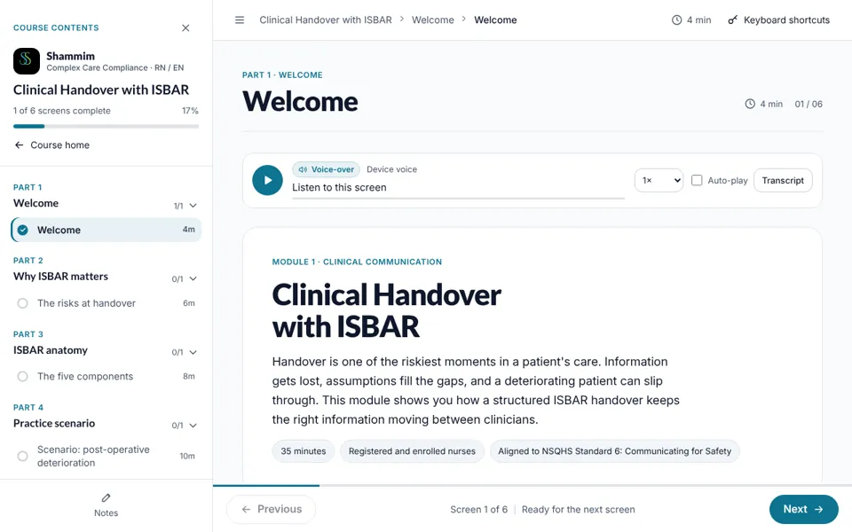
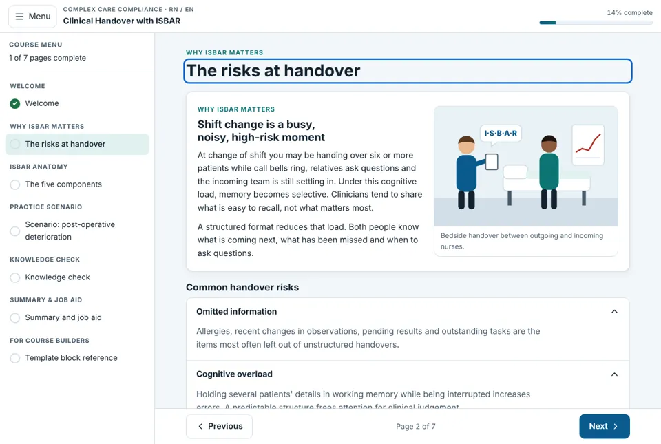
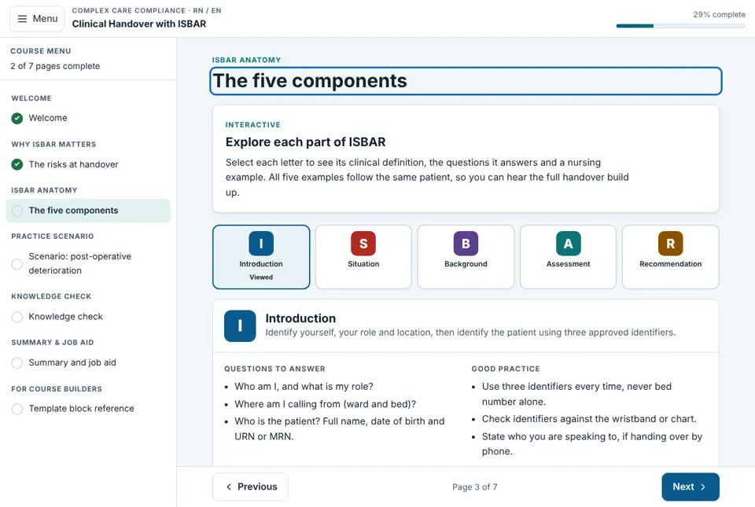
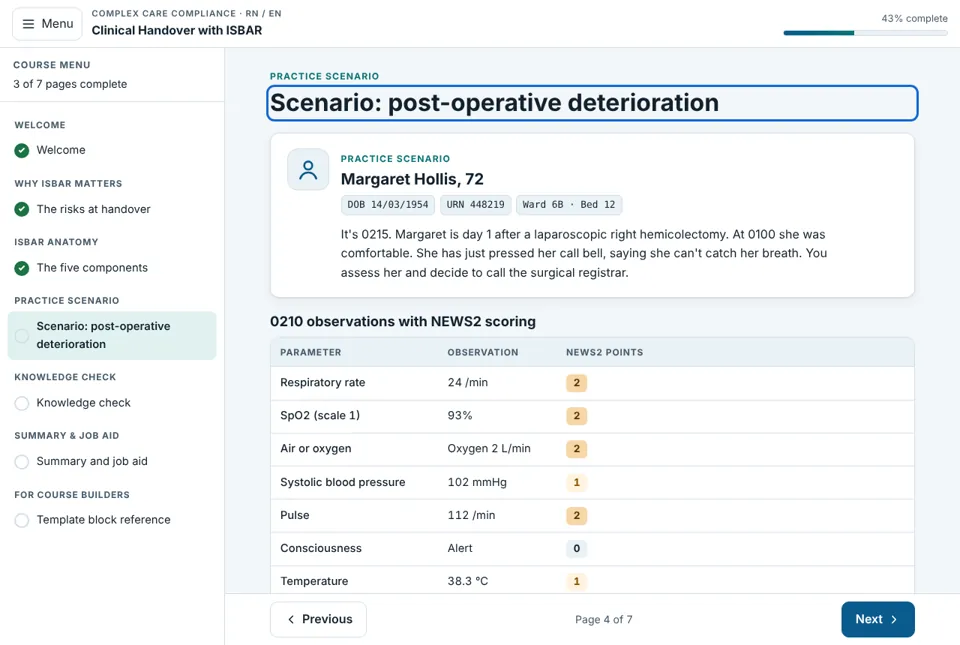
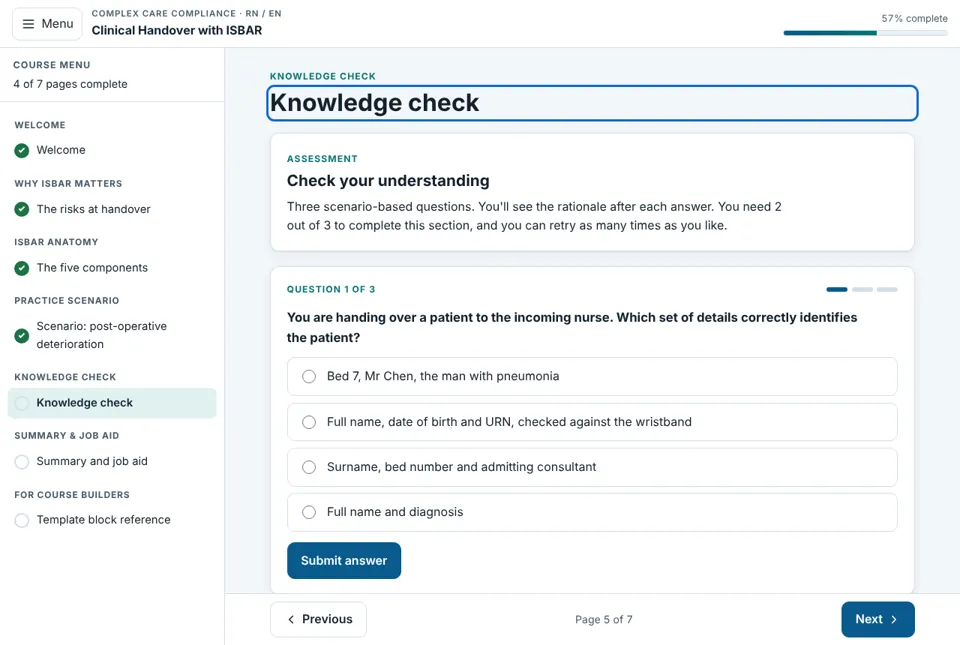
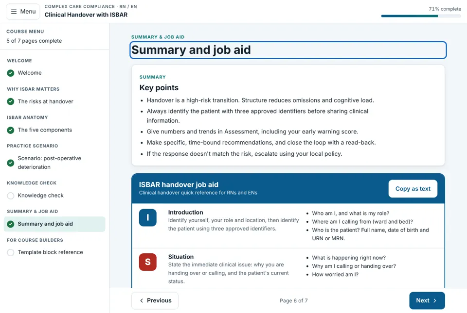

Walkthrough
See the course in under two minutes
A short narrated tour of the course, with captions built in. Watch it, then look through the interface below.
- Audience
- Registered and enrolled nurses
- Format
- Custom HTML course on a reusable series template
- Structure
- 6 parts, about 35 minutes
- Standards
- NSQHS Standard 6: Communicating for Safety
- Accessibility
- Keyboard alternative for drag and drop, transcripts, saved progress
My role
What I did on this project
Workplace project, built for an organisation’s internal staff.
Challenge & context
Communication failures are a consistent contributing factor in serious adverse events, and many happen at handover: shift change, transfers and escalating a deteriorating patient.
Instructional strategy
One patient, Margaret Hollis, runs through every page so learners hear a full handover build up letter by letter, then practise it under pressure.
Content & compliance
Aligned to NSQHS Standard 6. Three approved identifiers, numbers not adjectives, early warning scores and closed-loop read-back.
Interactive features
Flip cards (unstructured vs ISBAR), an ISBAR explorer, a NEWS2 observation table, drag-and-drop handover builder, recommendation choice and a live AI registrar role-play slot.
Interface
Screens from the built course. Select any screen to enlarge it.





